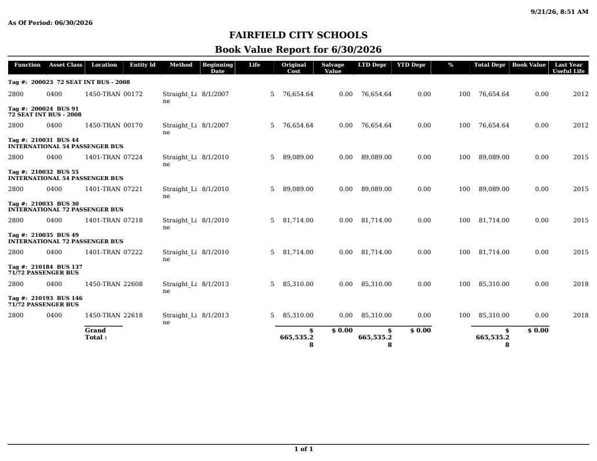

Source exhibit
BookValueReport (3).pdf
Source SHA-256: 813bf19713bf96d728f7b9de7b0aa788d99940ec0afa09d653785dd278eac435
Page 1

Extracted text · page 1
9/21/26, 8:51 AM As Of Period: 06/30/2026 FAIRFIELD CITY SCHOOLS Book Value Report for 6/30/2026 Function Asset Class Location Entity Id Method Beginning Date Life Original Cost Salvage Value LTD Depr YTD Depr % Total Depr Book Value Last Year Useful Life Tag #: 200023 72 SEAT INT BUS - 2008 2800 0400 1450-TRAN 00172 Straight_Li ne 8/1/2007 5 76,654.64 0.00 76,654.64 0.00 100 76,654.64 0.00 2012 Tag #: 200024 BUS 91 72 SEAT INT BUS - 2008 2800 0400 1450-TRAN 00170 Straight_Li ne 8/1/2007 5 76,654.64 0.00 76,654.64 0.00 100 76,654.64 0.00 2012 Tag #: 210031 BUS 44 INTERNATIONAL 54 PASSENGER BUS 2800 0400 1401-TRAN 07224 Straight_Li ne 8/1/2010 5 89,089.00 0.00 89,089.00 0.00 100 89,089.00 0.00 2015 Tag #: 210032 BUS 55 INTERNATIONAL 54 PASSENGER BUS 2800 0400 1401-TRAN 07221 Straight_Li ne 8/1/2010 5 89,089.00 0.00 89,089.00 0.00 100 89,089.00 0.00 2015 Tag #: 210033 BUS 30 INTERNATIONAL 72 PASSENGER BUS 2800 0400 1401-TRAN 07218 Straight_Li ne 8/1/2010 5 81,714.00 0.00 81,714.00 0.00 100 81,714.00 0.00 2015 Tag #: 210035 BUS 49 INTERNATIONAL 72 PASSENGER BUS 2800 0400 1401-TRAN 07222 Straight_Li ne 8/1/2010 5 81,714.00 0.00 81,714.00 0.00 100 81,714.00 0.00 2015 Tag #: 210184 BUS 137 71/72 PASSENGER BUS 2800 0400 1450-TRAN 22608 Straight_Li ne 8/1/2013 5 85,310.00 0.00 85,310.00 0.00 100 85,310.00 0.00 2018 Tag #: 210193 BUS 146 71/72 PASSENGER BUS 2800 0400 1450-TRAN 22618 Straight_Li ne 8/1/2013 5 85,310.00 0.00 85,310.00 0.00 100 85,310.00 0.00 2018 Grand Total : $ 665,535.2 8 $ 0.00 $ 665,535.2 8 $ 0.00 $ 665,535.2 8 $ 0.00 1 of 1